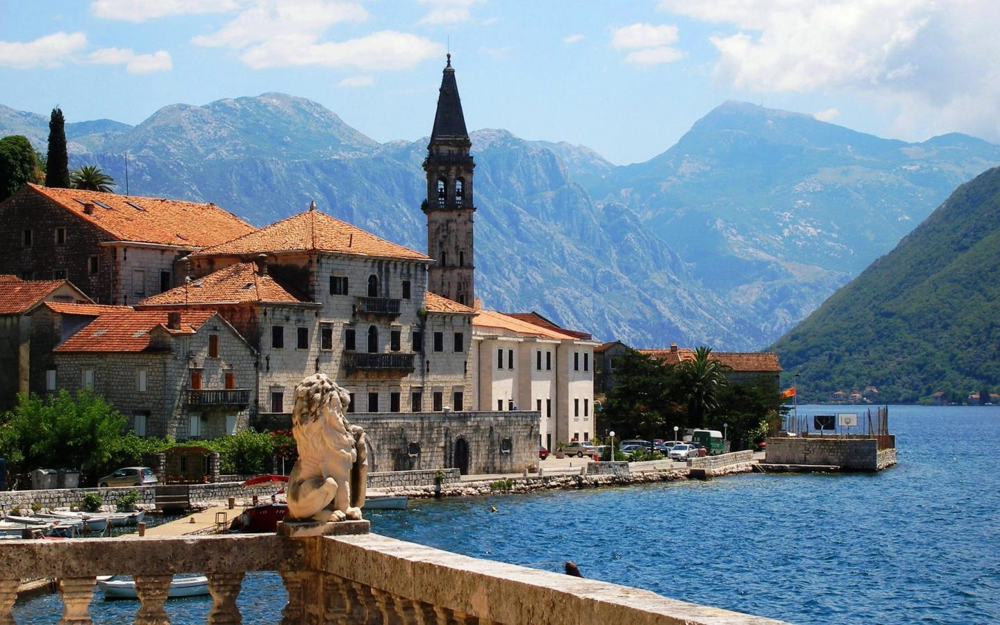
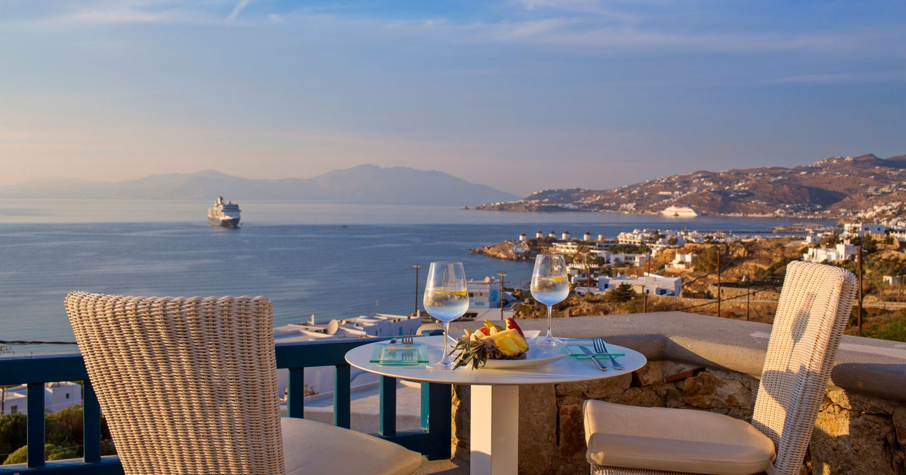

Алина Жукова

Контакты:
Соц.сеть: vk.comGitHub
Номер телефона: +79154063059
E-mail: aazhukova_11@edu.hse.ru
Страны, в которых я побывала:
За романтично-экзотичным названием Монтенегро скрывается знакомая славянская душа — Черногория. Маленькая и дружелюбная, эта страна пользуется неизменной популярностью в первую очередь среди поклонников бюджетного и экологичного отдыха. А ее схожесть с Крымом (правда, подчас не с самыми лучшими сторонами полуострова, например, — его отельной базой) и вовсе делают Черногорию родной и уютной.
Ехать в Грецию только за тем, чтобы в бешеном темпе осматривать достопримечательности или, наоборот, лениво валяться на пляже — преступление. В этой стране надо наслаждаться: едой и вином, морем и полуденным зноем, общением с местными жителями и природой, древностями и тишиной, дискотеками и весельем. Всем и сразу — по-другому здесь все равно не получится.
Текст взят с сайта Тонкости.ру